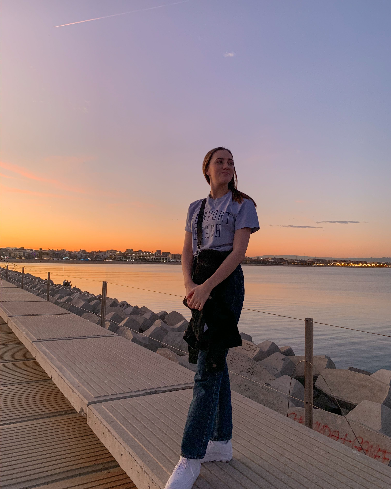

Sunniva Mathea Runde is a norwegian student at NTNU - Norwegian University of Science and Technology in Trondheim. She has a bachelor degree in Informatics from 2019 and is currently writing her master thesis in Interaction design, game and learning technology.
Sunniva has worked part time at Samfundet in Trondheim as a Graphic designer since fall 2018. Her passion lays with design as well as front-end programming.

About
